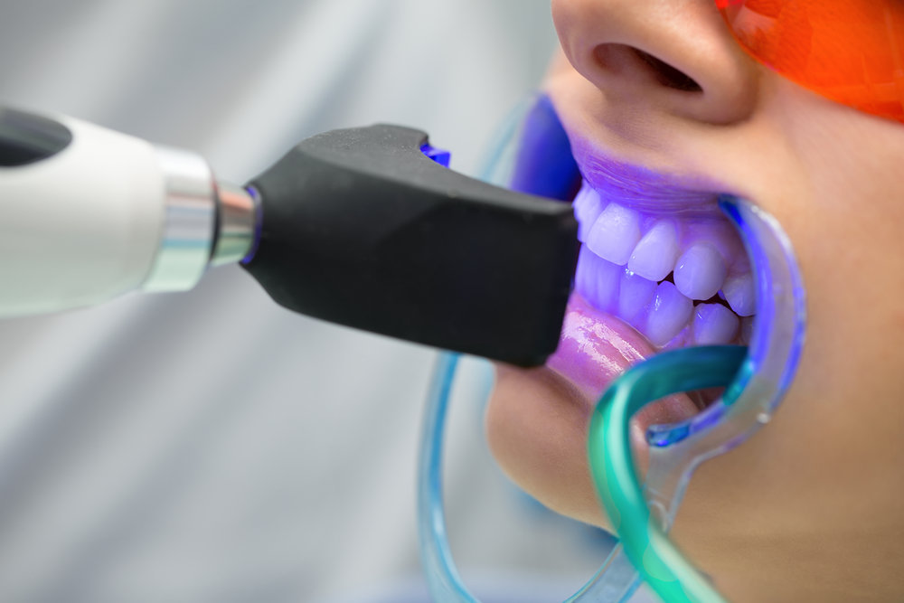

Teeth Whitening – Is Your Method Effective?!
by Teeth Whitening – Is Your Method Effective?!
Last Updated - 5 Days Ago

Teeth whitening techniques are a solution to transform your yellowish teeth to white shiny pearls everyone dream for. There are various techniques and toothpaste available in the market to whiten the teeth. But to the common man, all these sound same and is usually unaware of how much difference the various techniques can bring. This article discusses the different methods of teeth whitening and their expected effectiveness.
Before discussing types of whitening, let us see what would have paved way for this need of whitening. Some may lose color with aging, usage of cigars, excessive fast food use, extreme consumption of beverages such as alcohol, coffee, tea, and wine without properly rinsing mouth afterwards are the major causes of teeth discoloration. These can stain the teeth and in due course will lose the white color and may appear yellowish.
Bleaching agents with peroxide and whitening toothpaste are the common external agents used to change teeth coloration. They mostly make use of carbamide peroxide, which releases hydrogen peroxide on decomposition. It is the action of this chemical that brings about the visible change on teeth.
Dentists offer some variety of techniques to deal with the process such as Zoom teeth whitening, In-home whitening trays, Laser teeth whitening, and Power teeth whitening. According to PubMed, usage of bleaching trays overnight under the guidance of a dentist is found to be the best method to bring back the natural color of teeth.
The process is very much effective and can make results in a short time itself. Studies reveal that with the usage of whitening trays overnight, visible change can be obtained in a couple of weeks. Dentists check for the sensitivity of teeth and will only include the adequate concentration of hydrogen peroxide that the teeth can handle.
The whole treatment lasts only about six weeks and is much effective than any other process. A dental clinic offers the service of experienced professional dentists who can guide you through various phases of teeth whitening.
They test your teeth for sensitivity and determines how much bleaching it can withstand without causing side effects. They work on the information and provide you with the teeth whitening tray at the necessary concentration of hydrogen peroxide as the bleaching agent.The process is also helpful that it would not need much of your time at the dentist as it is done at home during the night. Whitening your teeth can also make you more confident. So make sure to get an appointment at the earliest for the best white teeth.
1. Zoom Teeth Whitening Zoom teeth whitening uses bleaching process which reduces the enamel and dentin discoloration. The process is activated by a broad beam of UV light, making the gel move deeper and remove the stains quickly. The whole process is so fast that in almost one hour you can leave the clinic. Zoom Advanced Power Chairside Lamp activates the bleaching procedure. On breaking down hydrogen peroxide, oxygen gets in contact with enamel and dentin and bleaches the surface. This process can give long-lasting whitening results.
2. In-home Whitening In-home teeth whitening is especially for those who are running short of time due to work or other engagements. The method uses whitening trays, specifically designed to fit your teeth with whitening gel on it. The design is in such a way as to obtain maximum desired teeth whitening without much trouble. Bleaching gel on the whitening tray uses carbamide peroxide for the process.
3. Laser Teeth Whitening Laser teeth whitening is the most effective whitening method available. It gives an instant result that a person entering the clinic with a blank face would return with a sparkling smile. In this procedure, peroxide gel is applied and activated by the use of laser heat. The gums and lips will be covered to protect from the heat and done with much care and accuracy. The laser whitening procedure lets the teeth remain white for an exceptionally longer period.
4. Power Whitening This whitening method most recommended for the sensitive teeth. They use mild bleaching technique so that the enamel and dentin would not be affected. It helps to avoid any tingling or irritations to the sensitive teeth during whitening. Altogether, a cent-percent safe method without any side effects.
Leave a Comment:
Search
Advertisement